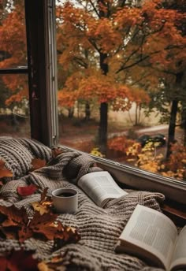
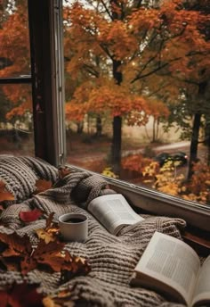

Октябрь уж наступил — уж роща отряхает Последние листы с нагих своих ветвей; Дохнул осенний хлад — дорога промерзает. Журча еще бежит за мельницу ручей, Но пруд уже застыл; сосед мой поспешает В отъезжие поля с охотою своей, И страждут озими от бешеной забавы, И будит лай собак уснувшие дубравы.

 
